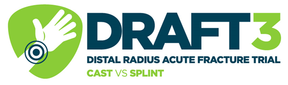
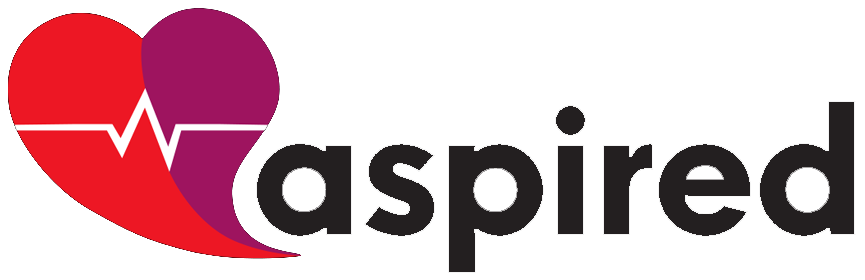
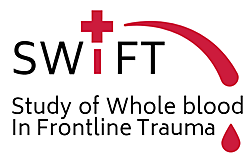
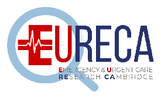
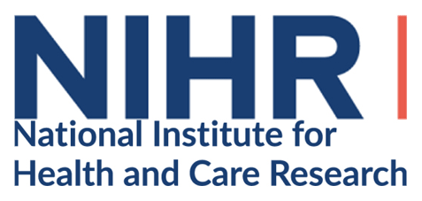

About this page

DRAFT3
This study compared cast versus removable splint for adults with a distal radius fracture that did not require manipulation.
Dexacell
Looking at the benefit of steroids in cellulitis.

BronchStart
This study examined the effect the COVID-19 pandemic has had on the way RSV cases present, and included an associated arm looking at vaccine uptake.
COMITED
A multicentre randomised trial that evaluated whether minor traumatic pneumothoraces can be managed without an intercostal chest drain.

Aspired
This study looked at the use of 14-day ambulatory monitoring for patients with unexplained syncope.
PicBone
This study looked at the use of ultrasound and MRI to assess the possibility of bacterial bone infection in children presenting with painful limbs.

Swift
This study looked at giving whole blood to hypotensive trauma patients by prehospital teams, compared with standard blood components. There may be a few patients still to come in — view the step-by-step guide.
TAP
A multicentre randomised trial evaluating the use of Beriplex to improve survival in patients with traumatic injury and acute major bleeding.
The study was terminated early because recruitment was slower than anticipated. No safety concerns were identified. Publication is not anticipated.
PRINCE-SSP
Pragmatic non-inferiority randomised trial investigating needle aspiration versus chest drain for secondary spontaneous pneumothorax.

